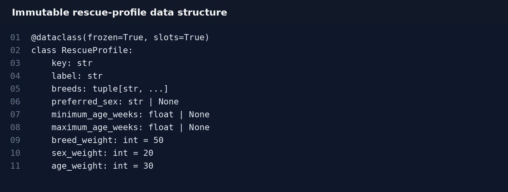
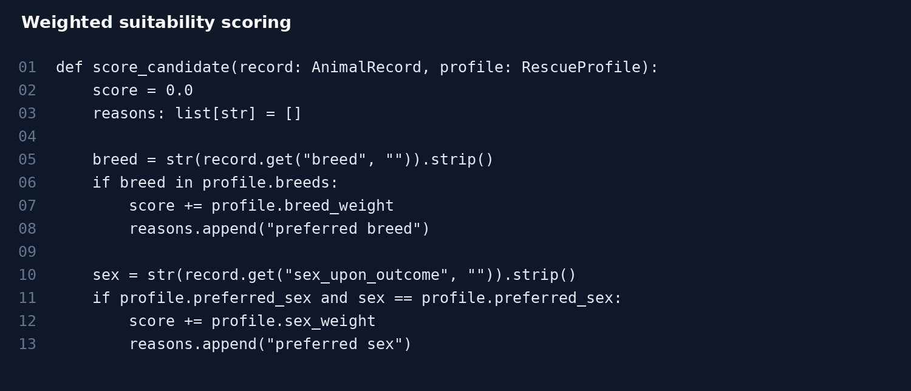

Structured Rescue Profiles
An immutable RescueProfile data class stores category rules, breed preferences, age ranges, and scoring weights. This replaces duplicated configuration with a single structured representation.
The rescue-filter workflow was enhanced from static Boolean filtering into a structured candidate-selection process with reusable rescue profiles, weighted suitability scores, stable ranking, and bounded top-result selection.
The Grazioso Salvare dashboard was originally created for CS-340 Client/Server Development. It retrieves animal-shelter records from MongoDB and presents filtering, tabular data, breed visualization, and map-based location information through a Dash interface.
For the Algorithms and Data Structures enhancement, the same artifact was extended to evaluate and rank rescue candidates instead of treating all qualifying records as equally suitable. The enhancement preserves the existing client/server workflow while adding explicit data structures and algorithms that are easier to test, reason about, and extend.
An immutable RescueProfile data class stores category rules, breed preferences, age ranges, and scoring weights. This replaces duplicated configuration with a single structured representation.
Each rescue profile builds a fresh MongoDB pre-filter. Query construction is centralized, reducing duplicate logic and preventing mutations from leaking between requests.
Candidate records receive points for preferred breed, sex, and age. The algorithm also records human-readable match reasons so the ranking is explainable rather than opaque.
heapq.nlargest selects only the strongest requested candidates. For n candidate records and k returned results, the ranking step is documented as O(n log k) time with O(k) auxiliary result space.
Sequence numbers are used as a secondary key so candidates with equal scores retain source order. This makes ties predictable and avoids unnecessary interface instability.
Unit tests verify query construction, profile fallback, defensive query copies, comparative scoring, ranking order, bounded results, and reset-order behavior.
Instructor feedback recommended adding visual support that highlights representative code changes. The examples below show selected portions of the actual Milestone Three implementation rather than requiring a reviewer to infer the changes only from the narrative.


This enhancement demonstrates data modeling, dictionary and tuple-based lookup structures, reusable query construction, weighted scoring, bounded ranking, stable tie handling, algorithm testing, and explicit complexity analysis. It also strengthens maintainability because rescue criteria can be changed in one profile rather than across repeated conditional branches.
The strongest alignment is with Course Outcome Three because the enhancement designs and evaluates a computing solution using algorithmic principles and makes the trade-off between full sorting and bounded top-result selection explicit. It also supports Outcome Four through practical Python techniques and automated tests, Outcome Two through technical documentation and visual communication, and Outcome Five through defensive handling of invalid or missing values.
The enhancement reinforced that a useful algorithm is more than a faster loop. The quality of the result also depends on how requirements are represented, how ties are handled, what happens with incomplete data, and whether the behavior can be tested. Converting static rescue filters into reusable profiles made the selection criteria easier to reason about and allowed scoring and ranking to be implemented without duplicating configuration.
A central design trade-off involved ranking. A full sort is straightforward, but the dashboard typically needs only a bounded set of high-quality candidates. Using a bounded top-result approach communicates that trade-off directly and gives the artifact a clearer algorithmic focus while preserving the dashboard's intended user experience.
The original CS-340 notebook, CRUD class, and supporting files.
Download original artifactThe cumulative project through the Algorithms and Data Structures enhancement.
Download enhanced artifactThe Microsoft Word narrative submitted for the Algorithms and Data Structures milestone.
Download narrative